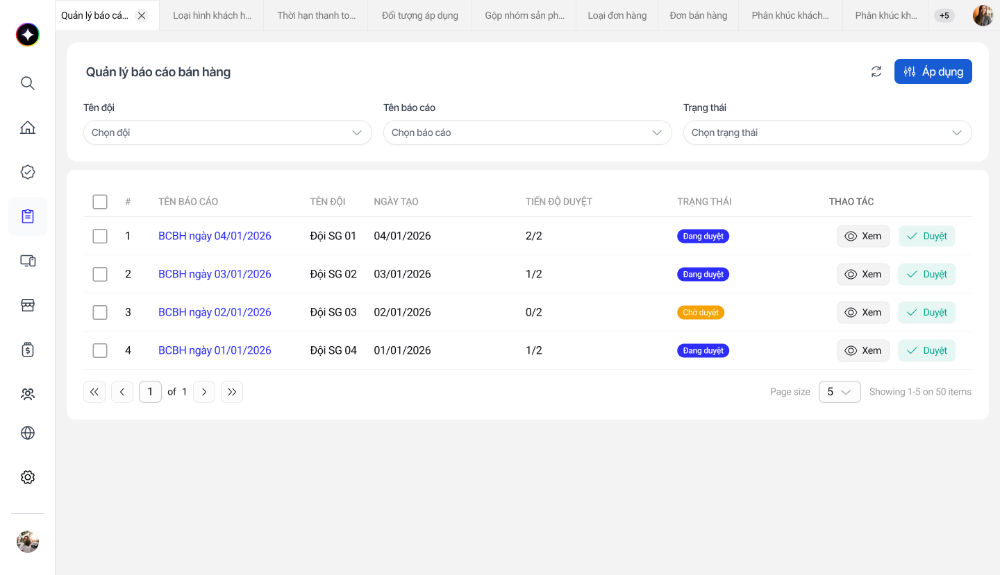
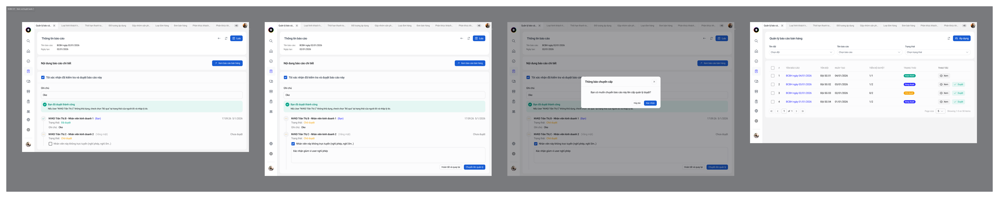
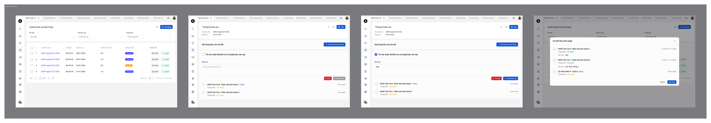
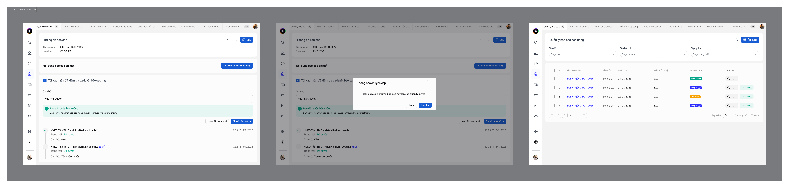
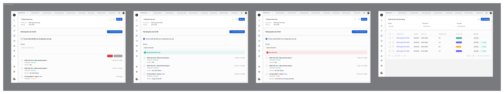
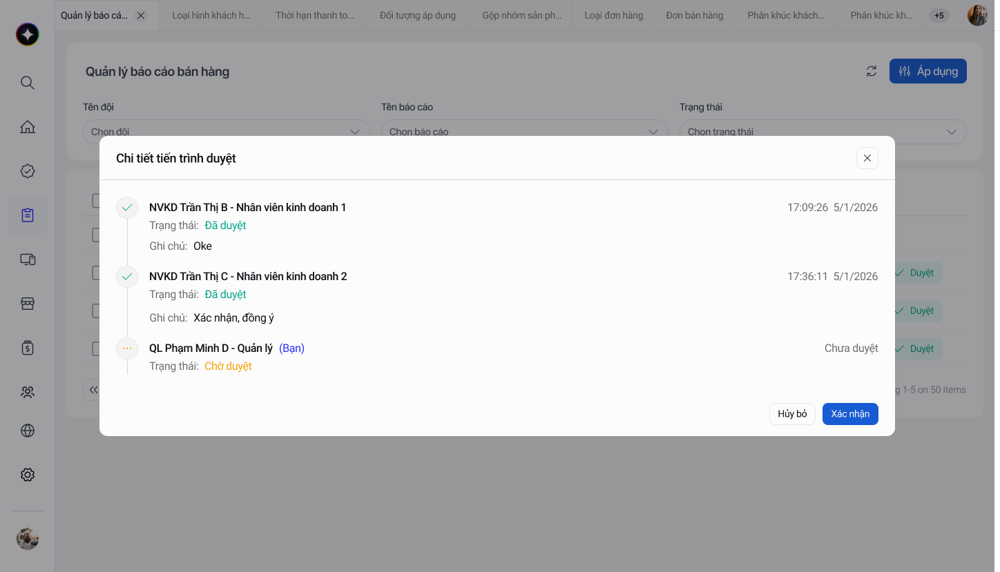
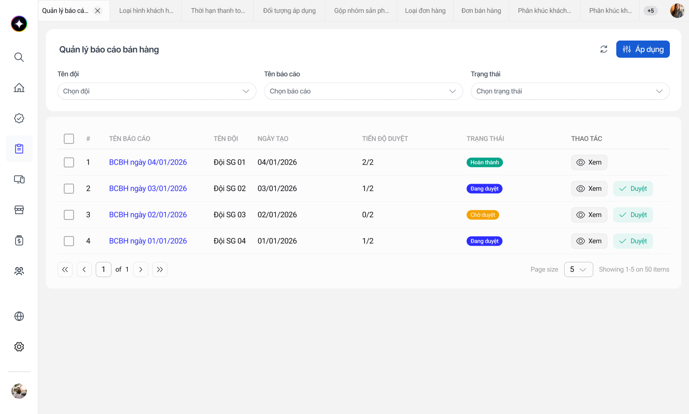
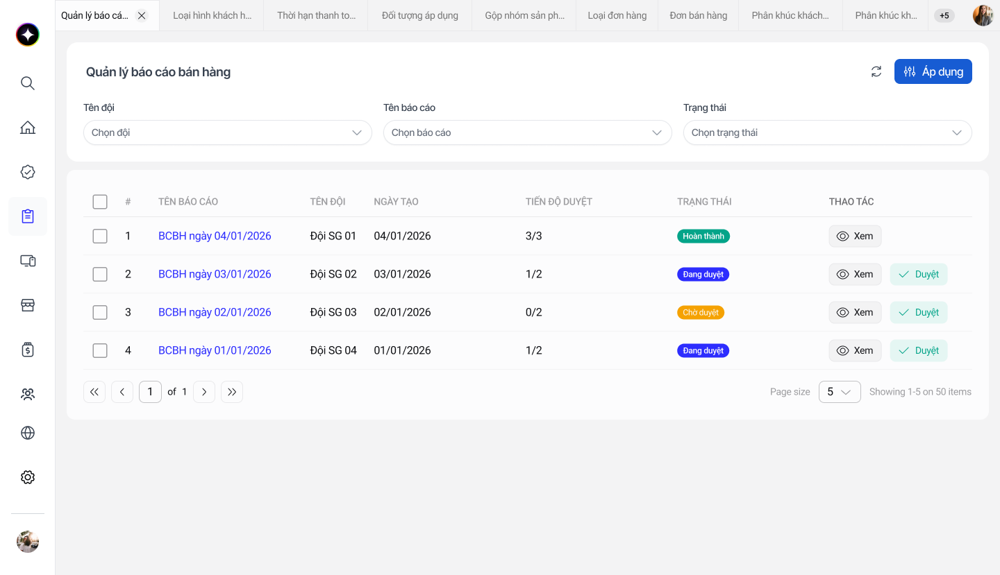

Designing a sequential approval flow for 2 sales reps and 1 manager. When an approver goes on leave or calls in sick midway, the whole process stalls. I designed a lightweight “mark as offline & approve on their behalf” mechanism so reports never get stuck.
The client needed a flow to approve daily sales reports. Each report must be reviewed sequentially: Sales Rep 1 → Sales Rep 2 → Manager. Only when all three links agree is a report considered complete.
A report follows the exact order rep 1 → rep 2 → manager. The next person only sees their turn once the previous one is done.
Each report shows approval progress (e.g. 1/2, 2/2) and a history of who approved, when, and with what note.
A sequential chain is fragile: if just one person is out midway, the whole report hangs indefinitely.
“I want to create a flow to approve sales reports. There will be 2 sales reps reviewing in order: rep 1 views and approves, hands off to rep 2 to view and approve, then it goes up to the manager to view and approve as the final step to complete.”
In other words, this is a 3-level approval chain with a mandatory sequential condition — prioritizing control and traceability, because sales reports directly affect revenue figures.
The creator; reviews & approves first, then hands off.
Cross-checks, approves, then sends up to the manager.
The final approver. Approve = complete, or reject.
The starting point is a list table. I prioritized two “vital” columns: Approval progress (how many of the required signatures are in) and Status, so users can quickly scan which reports are waiting on them. The table below actually works — filter, click “View”, “Approve”, tick offline and walk through a full flow.
| # | Report name | Team name | Approval progress | Status | Actions |
|---|
Interactive prototype with simulated data — try filtering and walk through a full approval flow (Sales Rep 1 → Sales Rep 2 → Manager).

sales-report-shots/01-list.pngWhile reviewing the flow, I asked myself: the sequential chain requires both sales reps. So what if, midway through approval, one of the two reps is sick, on leave, or out unexpectedly?
Rep 1 has finished approving but can’t hand off, because the system is still “waiting” for rep 2’s signature. The report is stuck mid-chain — it can’t reach the manager, no one knows what to do, and the numbers run late.
This is the kind of failure that doesn’t appear on the happy path but is certain to happen in real operations. Ignoring it means pushing the risk onto end users.
Let both reps approve in parallel.
RejectedLoses the ordered cross-check the client asked for.
Report hangs → admin unblocks manually.
RejectedDepends on someone outside the flow — slow and untraceable.
The current approver handles it right there.
✓ ChosenKeeps the chain, needs no outsider, and still records a full reason.
I added an option right on the row of the absent approver:
When a rep is Absent / offline, the other one ticks this box, enters a reason, then approves on their behalf and sends it straight to the manager.
The system provides guidance right in place — no need to dig through docs: “If user ‘Sales Rep Tran Thi C’ is unavailable, tick ‘Skip’ on their status and enter a reason.”
Importantly, every on-behalf approval records a reason and is clearly marked “absent”, so transparency isn’t lost — the final manager still sees full context before approving.
When Rep 2 is absent: tick offline → enter reason → send straight to the manager.

The flow is designed to always reach the finish whether or not the approver is present. Below are the four steps of the normal branch, and the fork when someone is absent.
Tick confirm, add a note, approve. Status → Approved.
It’s rep 2’s turn to cross-check and approve.
2/2 done → send up to the final manager.
Approve → complete, or reject with a reason.
Rep 2 is offline / absent.
Rep 1 ticks offline, enters a reason, approves in their place.
Skip the waiting step, send to the manager to approve as usual.
Approval progress as a timeline — who, when, and what note.
Manager screen: the Approve button is enabled only after ticking confirm.




So users can read the situation at a glance, I mapped each status to a semantic color from the design system.
Not their turn yet, or no one has acted.
Someone has approved; moving through the chain.
This link has agreed.
Offline — approved on their behalf with a reason.
The manager sends it back with a specific reason.
All 3 levels done — the report is finalized.
When the manager rejects, the reason is stored openly (e.g. “Rejected due to incorrect product quantity”) so the rep knows exactly what to fix — instead of just seeing the report bounced back.


reports hung because an approver was absent
minimum signatures when someone is offline, still fully traceable
of on-behalf approvals record a reason & are clearly marked
The “absent person” bottleneck wasn’t in the brief, but it’s certain to happen. Proactively proposing a solution makes the product more robust in operation.
Allow skipping a step, but require a recorded reason and a clear marker. Speed isn’t traded for transparency.
A helper banner appears exactly when the user needs it, instead of being buried in docs — reducing reliance on training.
Semantic colors, spacing and components all come from existing tokens, so the new flow snaps right into the rest of the product.